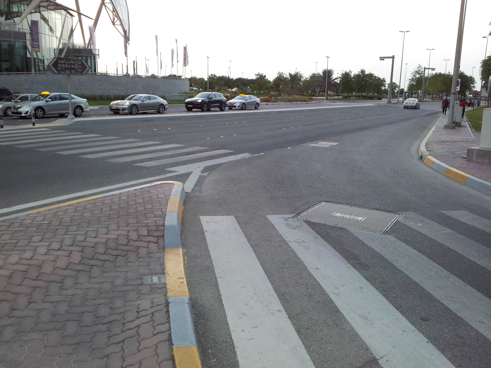

A basic principle of law is that one should not turn the impossible into a rule. Rules have to be reasonable in order to be followed. There is no law that forces people to jump to the Moon each morning, because people cannot jump to the Moon. Street signs define what is permitted and what is forbidden, allocate space to functions, turn the engineering into the normative. They constrain behavior. At times their directions trespass the boundaries of physical possibility. We ought to just reject irrational laws. But we can also use them as occasions for an imaginative exercise. For instance, we can reinterpret them as applying not to humans, but to an alien race. Here, for instance, long-legged pedestrians, very gifted in lateral vision.
Previous Essay
Next Essay